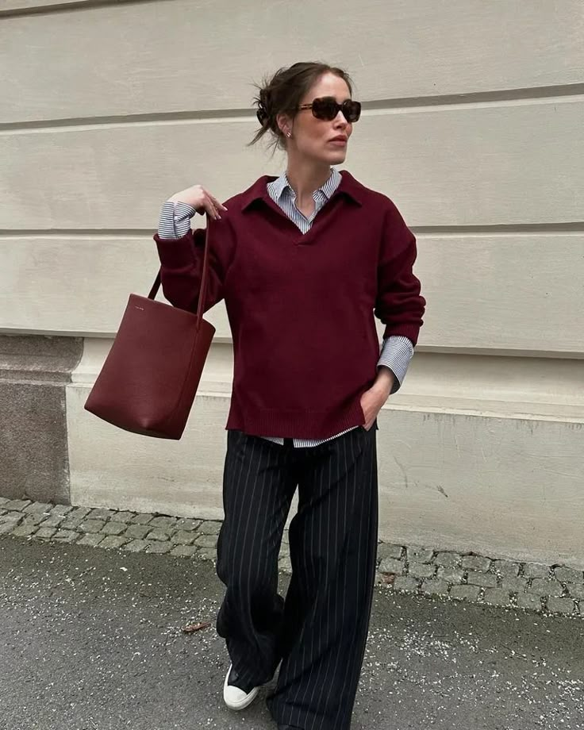
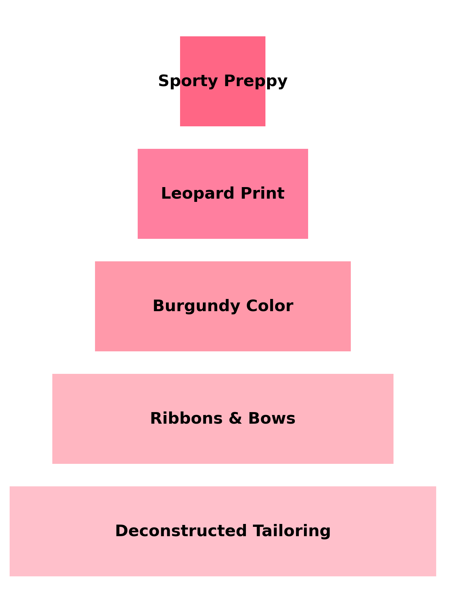
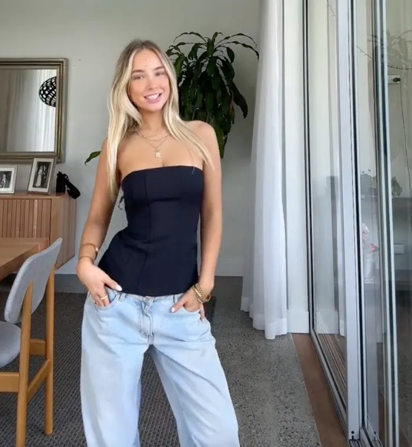

Leopard Print
Burgandy Takeover
2024 saw a bold contrast between structure and softness, with deconstructed tailoring and redefining silhouettes. Traditional suiting was given an undone twist—raw hems, asymmetrical cuts, and relaxed draping took center stage. Ribbons and bows added a hyper-feminine edge, adorning everything from shoes to statement blouses. Fashion embraced both power and playfulness, allowing for expressive layering and personal style curation.
Leopard print came back in full force, with everything from coats to footwear embracing the wild pattern. Burgundy emerged as the year’s “it” color, adding richness and depth to wardrobes across the board.
Ribbons & Bows
Deconstructed Tailoring